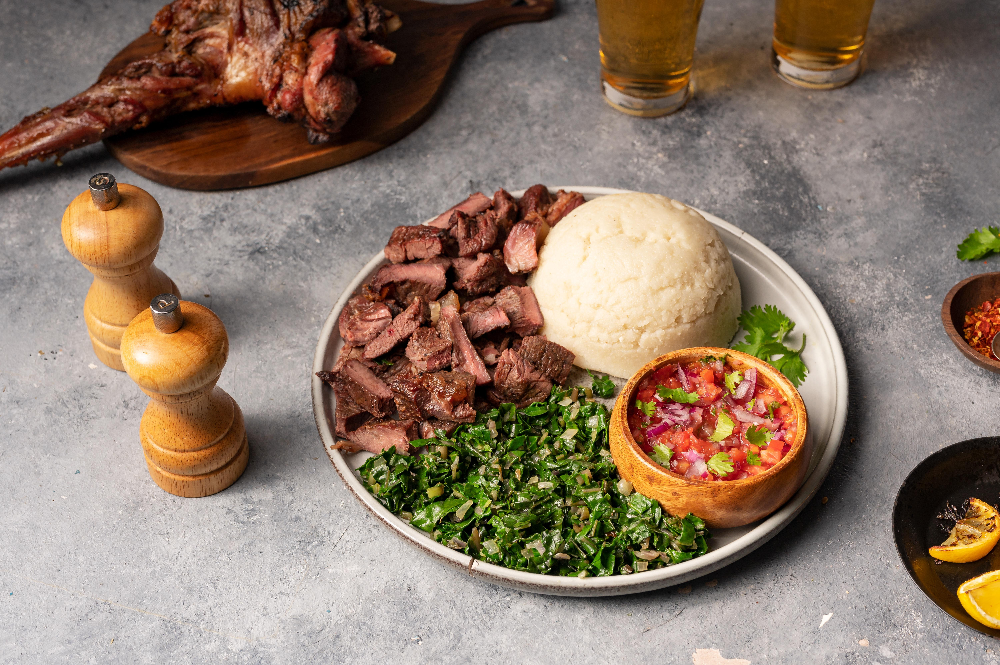
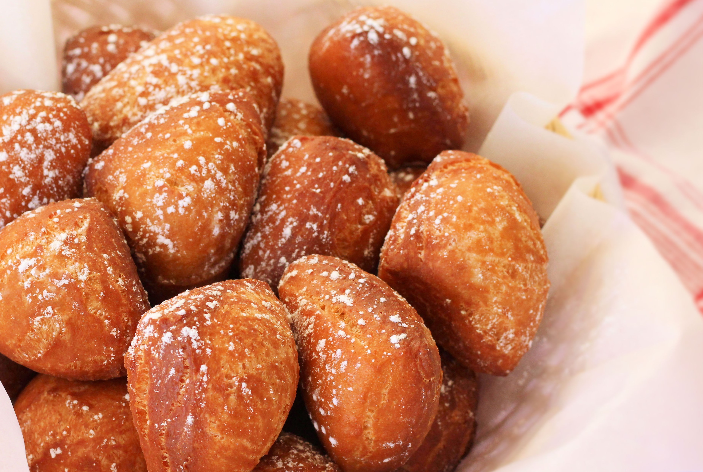
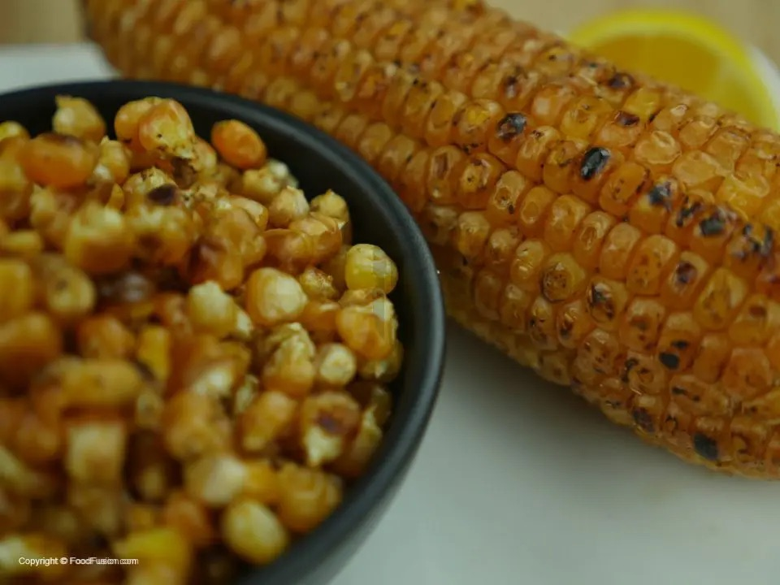

Pilau rice cooked in a well-seasoned broth of beef or chickenrice cooked in a well-seasoned broth of beef or chicken.

Chapati is a soft, flaky, chewy flatbread that can be enjoyed with curries as a main meal, and with tea or eggs for breakfast as well.

Nyama Choma is grilled goat meat mostly served with Ugali (a form of cornmeal dough commonly made with maize flour).

Maandazi is a pastry that can be enjoyed with tea as breakfast, tastes a lot like a doghnut, and looks a lot like beignet but is denser.
Samosas are deep-fried triangular-shaped pastries filled with either peas, minced meat, or potatoes.

Chips-Mayai is a combination of omelet and French fries, served with kachumbari and tomato ketchup.

Maindi-Choma is maize roasted over charcoal and, once ready, is rubbed with chili and lemon salt.

Matoke is a plantain banana stew, usually served with beef stew.